| ・ インタビュー (H29.12.11) | |||
入学案内のパンスレット向けに計測研のインタビューがありました．学生メインのインタビューでM2のHくんが担当です．本学の大事な広報活動．まずは，助教の人がいつも研究室配属時期や学外からの志願者向けにする教育・研究理念をベースに学生の募集についてのプレゼン．あとは実験風景とHくん撮影とHくんのインタビューでした． |
|||
|
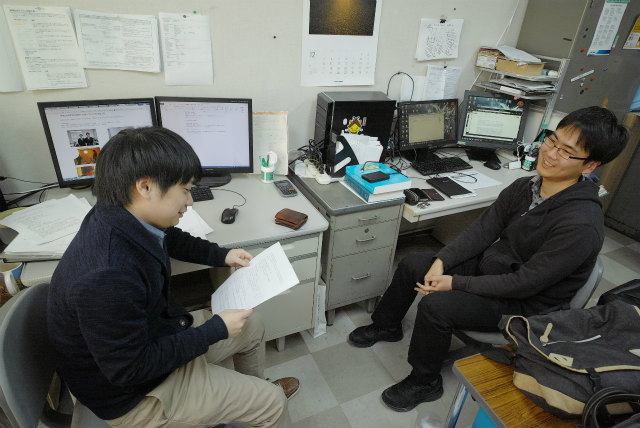
事前に質問リストが届いていたので準備万端です． |
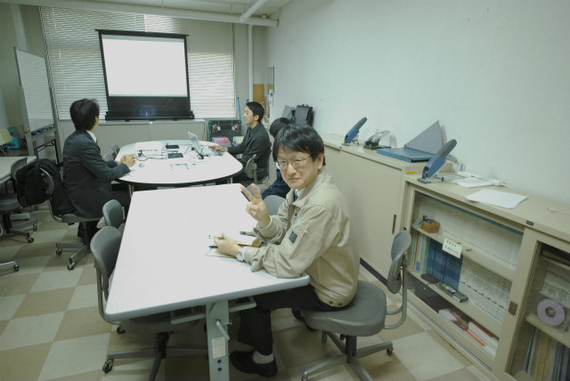
村田先生の見守りの中 | ||
|
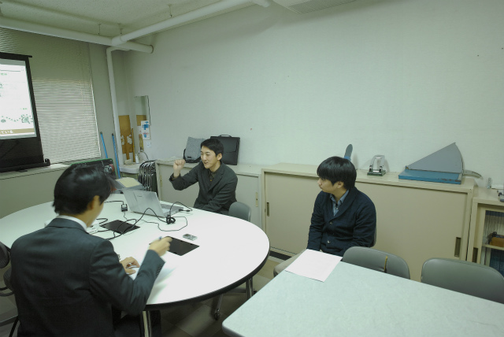
まずは助教の人がいつもの研究室紹介プレゼン 謎ジェスチャーは右手が微粒子で左手が回折 |
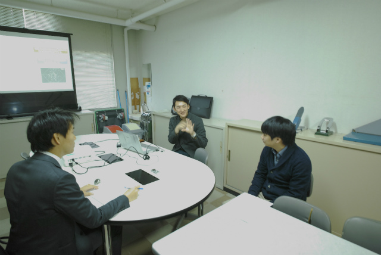
助教の人「微粒子表面で回折した物体光は参照光と干渉」 Hくん「この形は角スペクトル伝播計算！複素振幅がみえそう」 | ||
|
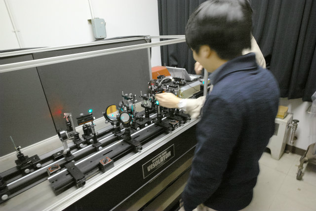
実験やってる風の写真 |
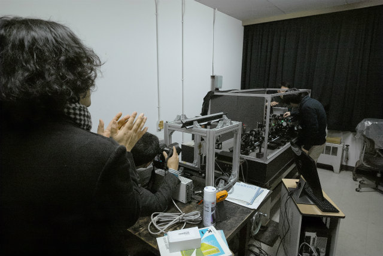
奥に助教の人 | ||
|
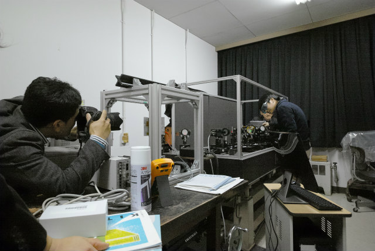
構図を決めて |
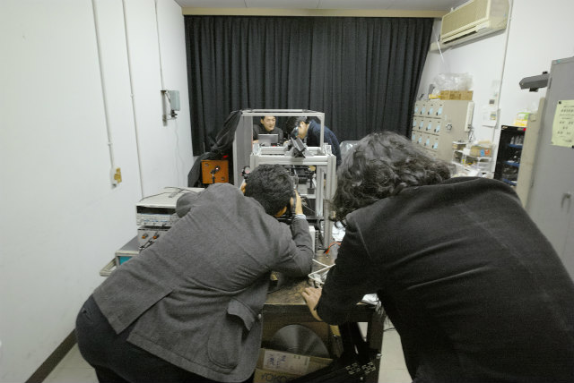
中腰でみんなツライ | ||
|
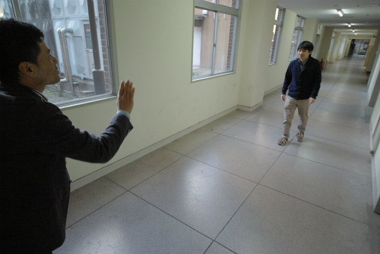
11号館から12号館への廊下 |
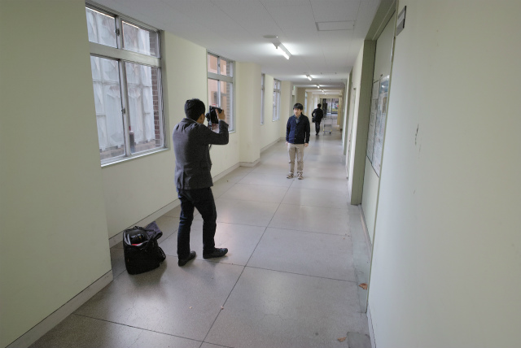
ポージング | ||
|
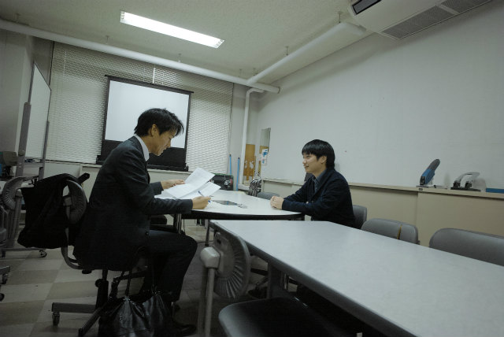
Hくんインタビュー |
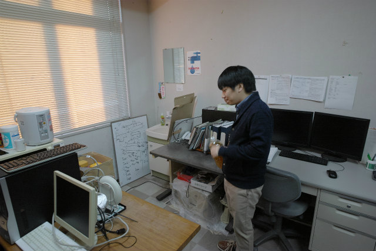
ひと仕事終えました | ||